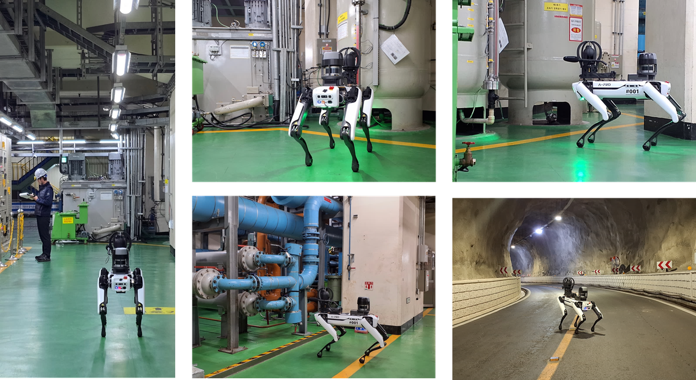
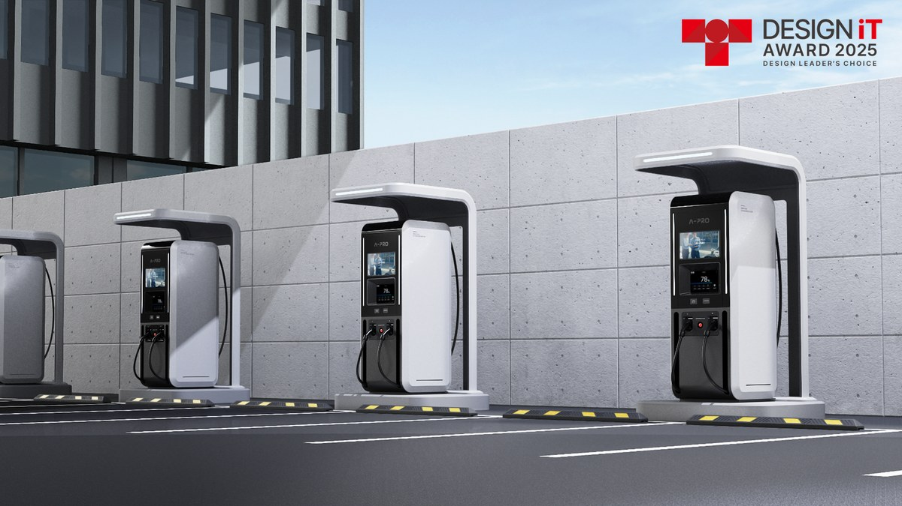

산업 안전 진단 솔루션
에이프로의 산업 안전 진단 로봇 솔루션 APRO는 이동형 로봇과 AI, 원격 관제를 결합해 위험 구역의 안전 점검을 무인·지능화합니다.
안전장비 착용 진단, 설비 이상·누출 점검, 열화상·음향 분석 등 6대 핵심 점검을 자율적으로 수행하고 통합 관제로 실시간 모니터링합니다.
작업자의 위험 노출을 줄이고 점검의 일관성을 높여 선제적이고 스마트한 산업 운영을 지원합니다.
AI로 배터리와 설비의 상태를 읽어냅니다.
진단부터 충전·제어까지, 전기 모빌리티의 데이터를 잇습니다.
에이프로의 산업 안전 진단 로봇 솔루션 APRO는 이동형 로봇과 AI, 원격 관제를 결합해 위험 구역의 안전 점검을 무인·지능화합니다.
안전장비 착용 진단, 설비 이상·누출 점검, 열화상·음향 분석 등 6대 핵심 점검을 자율적으로 수행하고 통합 관제로 실시간 모니터링합니다.
작업자의 위험 노출을 줄이고 점검의 일관성을 높여 선제적이고 스마트한 산업 운영을 지원합니다.

전기자동차 충전 중 배터리 데이터를 실시간으로 수집하고, 개별 셀 전압과 모듈 온도 정보를 AI 기반으로 분석하여 배터리의 이상 징후와 안전 상태를 진단하는 솔루션입니다.
이를 통해 배터리 사고 위험을 사전에 감지하고, 안전한 충전 환경 조성과 배터리 유지관리 효율 향상을 지원합니다.
전기자동차 사용후 배터리의 성능과 잔존가치를 신속하게 평가하는 AI 기반 진단 솔루션입니다.
배터리의 부분 방전 데이터를 기존 배터리 학습 데이터와 비교·분석하여, 10분 이내에 배터리 셀의 가용 최대 용량과 건강 상태(SOH)를 예측합니다.
에이프로의 전기자동차 충전 솔루션 PICKLE Station은 주거용 충전부터 공공 충전소와 상용 플릿까지 다양한 운영 환경에 대응하는 안정적인 충전 인프라입니다.
원격 모니터링과 충전기 운영·유지관리 기능을 지원하며, 충전 운영 플랫폼 및 에너지관리시스템과 연계하여 충전 인프라를 효율적으로 관리하고 유연하게 확장할 수 있습니다.
에이프로가 축적해 온 전력전자와 배터리 시스템 기술을 기반으로 안전하고 지속 가능한 전기 모빌리티 충전 생태계를 구축합니다.

텍스트 추가 예정
에이프로는 ECOTRON 차량·자율주행 제어기의 국내 총판으로서 VCU, ZCU, EVCC, 자율주행 제어기 등 검증된 제어 솔루션을 공급합니다.
모든 제품은 ASIL-D 등급 반도체와 ISO 26262 기능안전, MATLAB/Simulink 모델 기반 개발을 지원해 높은 안전성과 개발 효율성을 제공합니다.
에이프로는 국내 공급과 기술 지원을 통해 전기차·자율주행·무인 이동체·로봇 분야 고객의 제어기 도입을 지원합니다.
텍스트 추가 예정
텍스트 추가 예정

에너지 솔루션
인공지능 플랫폼Intelligent AI Platform
화합물 전력 반도체